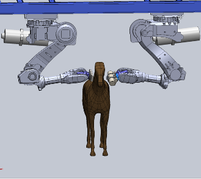

Volumetric Equine Scanner
Undergraduate research project with the Department of Biomedical Engineering and UF Large Animal Hospital.
DESIGN: Designed the first volumetric equine scanner controlled by two ABB 6 DoF robotic arms. The concept was modeled in SolidWorks and animated using Blender.
MATHS: Developed the inverse kinematics used to control the robotic arms for scanning operations in MATLAB. The x-ray image shows the improved image quality compared to traditional CT scan.
TEAM: Collaborated with surgeons from large animal hospital; held design reviews with ME professors; worked with neurosurgeons on the implementation of a virtual, image guided mechanical and computer system.

